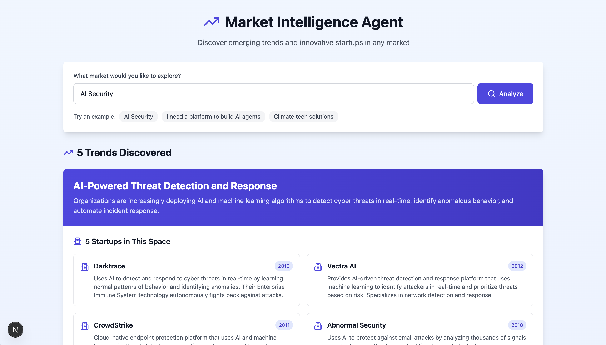

Market Intelligence Agent
AIAI-powered market intelligence application that analyzes market trends and discovers relevant startups using Claude AI with real-time web search.
Next.js
Claude AI
Tailwind CSS
View Project
arrow_forward